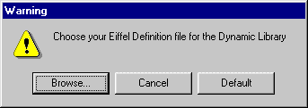
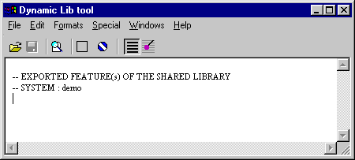
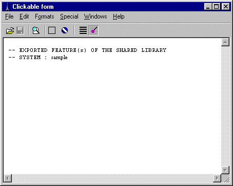

For each feature you will need to specify a class, a creation
procedure,and a feature.
- If the feature is a creation procedure then do not specify any creation,
it will use the feature as creation. For example ROOT_CLASS: make.
- If the class has no creation procedure, do not specify any creation.
The definition file
-- EXPORTED FEATURE(s) OF THE SHARED LIBRARY
-- SYSTEM : demo
-- CLASS [BAR]
BAR (make_b) : get_string
BAR (make_a) : print_bar
-- CLASS [ROOT_CLASS]
ROOT_CLASS : make
ROOT_CLASS (make) : foo
ROOT_CLASS (make) : test_bar |
-
-Name of the Eiffel system
-
-Class BAR
-here get_string uses make_b as creation
-here print_bar uses make_a as creation
-
-
-here the feature is also a creation
-
- |
Why this tool ?
This tool is a wizard to help the user to build its definition file. It will
use a simple drag and drop mechanism, and has the possibility to store different
definition files.
The tool will check the validity of the creation procedure, of the feature,
and basically will say when it is not possible.
Selecting and creating a definition file - Lace option
When you first open your dynamic library tool, the user will have to choose
or create an Eiffel definition file :
At this point, 2 choices: Browse to open an existing definition file, or
create the default file. A dialog box will appear :

If you open the default file, Ebench will create the file and open the
dynamic library tool.

Now, the user can use this tool to build its definition file with a simple
drag and drop mechanism.
Starting with ISE EiffelBench 4.5 there are two ways to select
an existing definition file. The first method is described above, but it has
the limitation that each time you recompile your project from scratch, you
will need to redo the previous steps. The second method is to use the new
lace definition (see Lace) `shared_library_definition'
in your Ace file. By specifying a definition file in your ace file, the
Eiffel compiler will look at it to generate the DLL.
Dynamic Library tool bar

The Dynamic Library toolbar is composed of
-
open/save part
- to save or open a new eiffel definition file
(*.def).
- format
part:
- to select clickable format, or text format.
- the
dynamic lib icon:
- to reload the definition file
Warning!!
: this will cancel your changes, and reload the
file
How to use it ?
The way to use the Dynamic Library Tool is simple, you first open your tool,
as describe before, then you just drag and drop the feature you want to
export into the Dynamic Library Tool or the corresponding button, if you do not
follow the constraints, a warning dialog will pop up.
In case of a class with severals valid creation procedures, a dialog will pop
up, with a list of valid creation procedure (ie: no argument).

At the C level
Basically, once the Eiffel definition file is created, the compiler will
generate a set of files and will compile them to generate the Dynamic
library into the EIFGEN/W_code or EIFGEN/F_code directory.
Note: to generate and compile these files, you have to open at least once
your definition file, during your current session, this way EiffelBench will
know which one to use, if you do not specify any definition file, nothing will
be generated.
The set of files is composed of:
- EIFGEN/W_code/system.def (or
F_code)
- EIFGEN/W_code/edynlib.c (or F_code)
- $(EIFFEL5)/bench/spec/$(PLATFORM)/templates/egc_dynlib.template
this file will be copied during
the compilation into the EIFGEN/W_code/E1 directory as egc_dynlib.c
- $(EIFFEL5)/bench/spec/$(PLATFORM)/include/egc_dynlib.h
- and the Makefile
The system.def is use only on windows, this
files is the definition file used to generate a DLL at the linking.
LIBRARY demo.dll
DESCRIPTION DEMO.DLL
EXPORTS
;System
init_rt
reclaim_rt
; CLASS [BAR]
get_string
print_bar
; CLASS [ROOT_CLASS]
make
foo
test_bar
|
- Information about the DLL
- ...
-
- The following are EXPORTed functions.
-
- This part concerns the RunTime.
- initialize the RT.
- reclaim the Eiffel object.
-
- The exported for the CLASS BAR
- get_string
- print_bar
-
- The exported for the CLASS BAR
- make
- foo
- test_bar
|
The edynlib.c file is the "interface" between
the Eiffel system, and the C code, basically it contains the declaration, and
implementation of the function used to call directly the eiffel feature with its
real name.
The egc_dynlib.c and egc_dynlib.h files are
used for the operation by the RunTime.